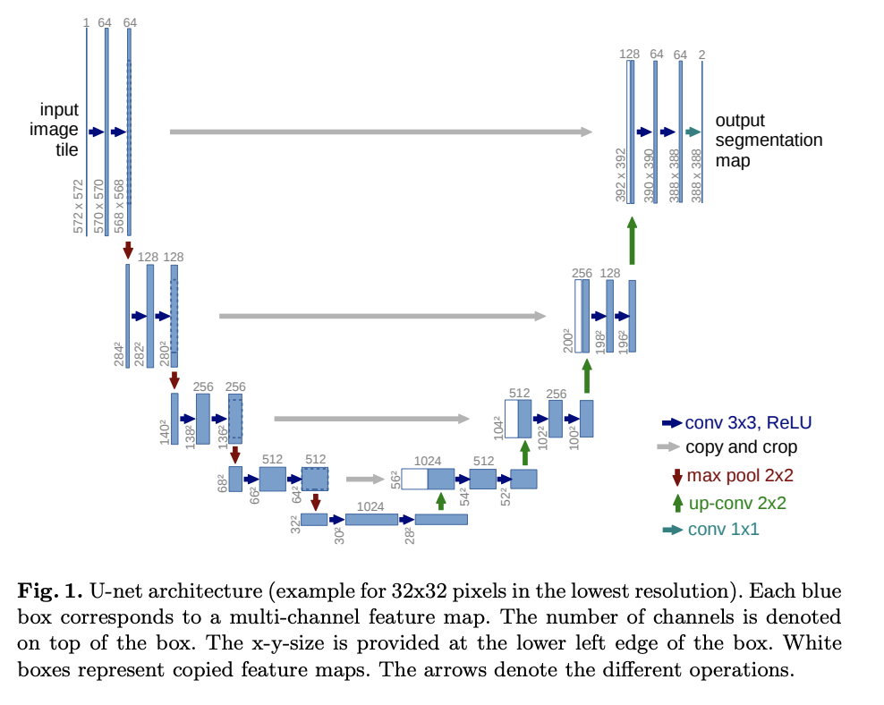

U-Net
这是论文《U-N et：生物医学图像分割的卷积网络》中U-Net模型的实现。
U-Net 由一条收缩路径和一条扩展路径组成。收缩路径是一系列卷积图层和池化图层，其中要素地图的分辨率会逐渐降低。扩展路径是一系列向上采样图层和卷积图层，其中要素地图的分辨率会逐渐提高。
在扩张路径的每一步中，收缩路径中的相应要素地图都与当前要素地图相连。

以下是在 Carvana 数据集上训练 U-Net 的实验的训练代码。
27import torch
28import torchvision.transforms.functional
29from torch import nn32class DoubleConvolution(nn.Module):in_channels是输入声道的数量out_channels是输出声道的数量
43 def __init__(self, in_channels: int, out_channels: int):48 super().__init__()第一个卷积层
51 self.first = nn.Conv2d(in_channels, out_channels, kernel_size=3, padding=1)
52 self.act1 = nn.ReLU()第二个卷积层
54 self.second = nn.Conv2d(out_channels, out_channels, kernel_size=3, padding=1)
55 self.act2 = nn.ReLU()57 def forward(self, x: torch.Tensor):应用两个卷积层和激活
59 x = self.first(x)
60 x = self.act1(x)
61 x = self.second(x)
62 return self.act2(x)65class DownSample(nn.Module):73 def __init__(self):
74 super().__init__()最大池化层
76 self.pool = nn.MaxPool2d(2)78 def forward(self, x: torch.Tensor):
79 return self.pool(x)82class UpSample(nn.Module):89 def __init__(self, in_channels: int, out_channels: int):
90 super().__init__()向上卷积
93 self.up = nn.ConvTranspose2d(in_channels, out_channels, kernel_size=2, stride=2)95 def forward(self, x: torch.Tensor):
96 return self.up(x)99class CropAndConcat(nn.Module):x扩展路径中的当前要素地图contracting_x收缩路径中的相应要素地图
106 def forward(self, x: torch.Tensor, contracting_x: torch.Tensor):将要素地图从收缩路径裁剪为当前要素地图的大小
113 contracting_x = torchvision.transforms.functional.center_crop(contracting_x, [x.shape[2], x.shape[3]])连接要素映射
115 x = torch.cat([x, contracting_x], dim=1)117 return xU-Net
120class UNet(nn.Module):in_channels输入图像中的通道数out_channels结果特征图中的信道数
124 def __init__(self, in_channels: int, out_channels: int):129 super().__init__()收缩路径的双卷积层。从开始，每一步的功能数量都会增加一倍。
133 self.down_conv = nn.ModuleList([DoubleConvolution(i, o) for i, o in
134 [(in_channels, 64), (64, 128), (128, 256), (256, 512)]])向下采样收缩路径的图层
136 self.down_sample = nn.ModuleList([DownSample() for _ in range(4)])分辨率最低的两个卷积层（U 的底部）。
139 self.middle_conv = DoubleConvolution(512, 1024)向上采样扩展路径的图层。通过向上采样，要素数量减半。
143 self.up_sample = nn.ModuleList([UpSample(i, o) for i, o in
144 [(1024, 512), (512, 256), (256, 128), (128, 64)]])扩展路径的双卷积层。它们的输入是当前要素地图和收缩路径中的要素地图的串联。因此，输入要素的数量是向上采样的要素数量的两倍。
149 self.up_conv = nn.ModuleList([DoubleConvolution(i, o) for i, o in
150 [(1024, 512), (512, 256), (256, 128), (128, 64)]])裁剪和连接扩展路径的图层。
152 self.concat = nn.ModuleList([CropAndConcat() for _ in range(4)])生成输出的最终卷积层
154 self.final_conv = nn.Conv2d(64, out_channels, kernel_size=1)x输入图像
156 def forward(self, x: torch.Tensor):收集收缩路径的输出，以便稍后与扩展路径串联。
161 pass_through = []收缩路径
163 for i in range(len(self.down_conv)):两个卷积层
165 x = self.down_conv[i](x)收集输出
167 pass_through.append(x)向下采样
169 x = self.down_sample[i](x)U-Net 底部有两个卷积层
172 x = self.middle_conv(x)广阔的道路
175 for i in range(len(self.up_conv)):向上采样
177 x = self.up_sample[i](x)连接收缩路径的输出
179 x = self.concat[i](x, pass_through.pop())两个卷积层
181 x = self.up_conv[i](x)最终卷积层
184 x = self.final_conv(x)187 return x